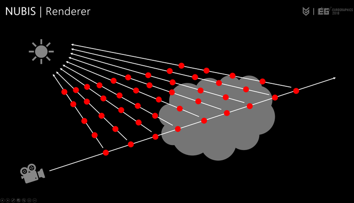

# Volume Rendering

在光传播时，抽象点来说就是分子把收集到的光带到你的眼睛里，但这过程中会发生各种情况扰乱光的传播。
- 通过介质传播到眼睛的光束会由于以下原因损失能量
- 吸收（Absorption）吸收了一部份的光，把收集到的光吸收了一部份
- 外散射（Out-scattering）把一部份光散射出去给别的分子，从而光能力不能到你的眼睛
- 通过介质传播到眼睛的光束会由于以下原因损失能量
- 自发光（Emissive）就是自己的光能量
- 内散射（In- Scattering）把从四面八方发射出来的光收集起来带到我们的眼睛，可以理解为 Irradiance

渲染时候用 Raymrach 做法，摄像机每步想前前进然后再想太阳方向累加求积分，在 ue volume cloud 中主要做了 2 次，算 LuminanceIntegral 时候
# Scattering
""1
2
3
4
| float3 LuminanceIntegral = (ScatteredLuminance - ScatteredLuminance * SafePathSegmentTransmittance) / SafeExtinctionCoefficients;
float3 ScatteringAmount = saturate(ScatteringCoeff * (1.0f - Transmittance) / ExtinctionCoeffSafe);
|
算 Transmittance，其中 extension = Absorption + Scattering , S 就是距离或者深度，这个 extension 可以自定义，也就是说这三个数都可以自定义
L(s)=e−(σa+σs)sL(s)=e−σts
意思就是说越深的地方透过越少

散射类型也分很多种
- 米氏散射（Mie scattering）： 散射后看不出具体颜色，仅仅是黑白灰（反映光强大小）。是大气中粒子的直径与辐射的波长相当时发生的散射。这种散射主要由大气中的微粒，如烟、尘埃、小水滴及气溶胶等引起。米氏散射的散射强度与频率的二次方成正比，并且散射在光线向前方向比向后方向更强，方向性比较明显
- ** 瑞利散射（Rayleigh scattering）：** 散射波长与入射波长相同；散射光强与波长的四次方成反比；散射光强按空间方向成哑铃形角分布。渲染天穹会用的到，另外关于偏振态变化：自然光入射时，各方向的散射光一般为部分偏振光，垂直入射光方向的散射光是线偏振光，沿入射光或其逆方向的散射光是自然光。
注：大于一定尺寸的是米氏散射，小于一定尺寸的是瑞利散射
# Phase Function
光从进入 volume 到出来的时候，只有一小部分入射光向眼睛散射。多少取决于光线和视线方向之间的角度。而这个函数就是概率，算出有多少光线进入我们的眼睛，也就是说每次相机打 raymrach 做积分时候，这就是眼睛与 direction light 的 dot。因为定向光和相机摄像在积分时候是不会变的，所以只用算一次就行了，其中写成
fp(x,θ)
x 就是 phase，自定义的参数，在 Nubis 和 ue 都是两双 Phase Function 算出最终 Phase
其中在发生散射时候介质（Participating Media）有两种属性：
各项同性（Isotropic）
就是各个方向发生的散射几率都是相同的，也就是生活中的漫反射，其公式很简单
""1
2
3
4
| float IsotropicPhase()
{
return 1.0f / (4.0f * PI);
}
|
各项异性（Anisotropic）
光线只朝着一个方向大量散射，例如云光照、头发

最常用之一 Phase 函数就是 HG 函数
fp(x,θ)=4π1(1+g2−2gcosθ)231−g2.
""1
2
3
4
5
6
7
8
9
10
11
12
13
14
15
16
17
18
| float HenyeyGreensteinPhase(float G, float CosTheta)
{
float Numer = 1.0f - G * G;
float Denom = 1.0f + G * G + 2.0f * G * CosTheta;
return Numer / (4.0f * PI * Denom * sqrt(Denom));
}
float SchlickPhaseFromK(float K, float CosTheta)
{
const float SchlickPhaseFactor = 1.0f + K * CosTheta;
const float PhaseValue = (1.0f - K * K) / (4.0f * PI * SchlickPhaseFactor * SchlickPhaseFactor);
return PhaseValue;
}
float SchlickPhase(float G, float CosTheta)
{
const float K = 1.55f * G - 0.55f * G * G * G;
return SchlickPhaseFromK(K, CosTheta);
}
|
这是个对 MieScattering 的一个模拟
# 代码
最后求出
""1
2
3
4
5
6
7
8
9
10
11
12
13
14
15
16
17
18
19
20
21
22
23
24
25
26
27
28
29
30
31
| float HenyeyGreensteinPhase(float G, float CosTheta)
{
float Numer = 1.0f - G * G;
float Denom = 1.0f + G * G + 2.0f * G * CosTheta;
return Numer / (4.0f * PI * Denom * sqrt(Denom));
}
float SamplePhaseFunction(in float PhaseCosTheta, in float PhaseG, in float PhaseG2, in float PhaseBlend)
{
PhaseG = clamp(PhaseG, -0.999f, 0.999f);
PhaseG2 = clamp(PhaseG2, -0.999f, 0.999f);
PhaseBlend = clamp(PhaseBlend, 0.0f, 1.0f);
float MiePhaseValueLight0 = HenyeyGreensteinPhase(PhaseG, -PhaseCosTheta);
float MiePhaseValueLight1 = HenyeyGreensteinPhase(PhaseG2, -PhaseCosTheta);
const float Phase = MiePhaseValueLight0 + PhaseBlend * (MiePhaseValueLight1 - MiePhaseValueLight0);
return Phase;
}
const float3 Light0Direction = ResolvedView.AtmosphereLightDirection[0].xyz;
const float3 Light1Illuminance = float3(0.0f, 0.0f, 0.0f);
const float3 Light1IlluminanceFinal = float3(0.0f, 0.0f, 0.0f);
const float3 Light1Direction = float3(0.0f, 0.0f, 0.0f);
const float3 wi0 = Light0Direction;
const float3 wi1 = Light1Direction;
const float3 wo = Raydir;
const float Phase0CosTheta = dot(wi0, wo);
const float Phase0 = SamplePhaseFunction(Phase0CosTheta, PhaseG, PhaseG2, PhaseBlend);
const float3 SafePathSegmentTransmittance = exp(-SafeExtinctionCoefficients * dtMeters);
float3 ScatteredLuminance = TransmittanceToLight0 * LightColor * Phase0;
float3 LuminanceIntegral = （ScatteredLuminance *（1 - SafePathSegmentTransmittance)） / SafeExtinctionCoefficients;
Luminance += LuminanceIntegral ;
|